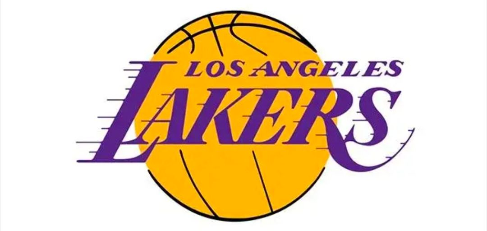
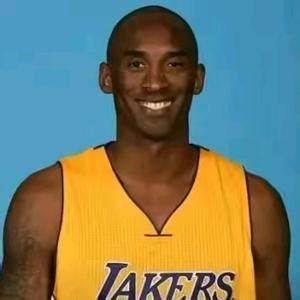

| 返回 |
|---|
|  | ||||
|---|---|---|---|---|
|  | ||||
| 首 页 | 早 年 经 历 | 成 绩 荣 誉 | 传 奇 延 续 | |
| 科比·布莱恩特是一位已故的篮球运动员，出生于1978年8月23日，他的全名是科比·比恩·布莱恩特·考克斯。科比在1996年NBA选秀中以第1轮第13顺位被夏洛特黄蜂队选中，并被交易至洛杉矶湖人队，他的整个NBA生涯都效力于洛杉矶湖人队。 在职业生涯中，科比共获得5次NBA总冠军、1次NBA常规赛MVP、2次NBA总决赛MVP、4次NBA全明星赛MVP、2次NBA赛季得分王。他还共入选了NBA全明星首发阵容18次、NBA最佳阵容15次（其中一阵11次、二阵2次、三阵2次）、NBA最佳防守阵容12次（其中一阵9次、二阵3次）。 除了NBA的成就，科比还帮助美国队夺得2007年美洲男篮锦标赛金牌、2008年北京奥运会男子篮球金牌以及2012年伦敦奥运会男子篮球金牌。 然而，在2020年1月26日，科比因直升机事故遇难，年仅41岁。他的二女儿吉安娜也在事故中不幸去世。科比的离世让全球的篮球迷都感到巨大的悲痛。 尽管他已经离开了我们，但科比留下的精神遗产和他在篮球场上的卓越表现将永远被铭记。 | ||||
| made by Kobe Bryant's loyal fan and Shark did it too. | ||||